The rebound effect in building heating retrofits: Theory and empirical evidence
Trial lecture
Alexander Severinsen
Norwegian University of Life Sciences
School of Economics and Business
April 13, 2023
Source: Generative art, Open AI DALL-E
“Money saved from more efficient heating to fly to Spain”
Agenda
- Energy use in buildings
- The potential for energy savings in buildings
- Energy efficiency and retrofitting
- Rebound effects - setting the scene
- Estimations methods - case study
- Empirical evidence
- Conclusions
Global total energy use
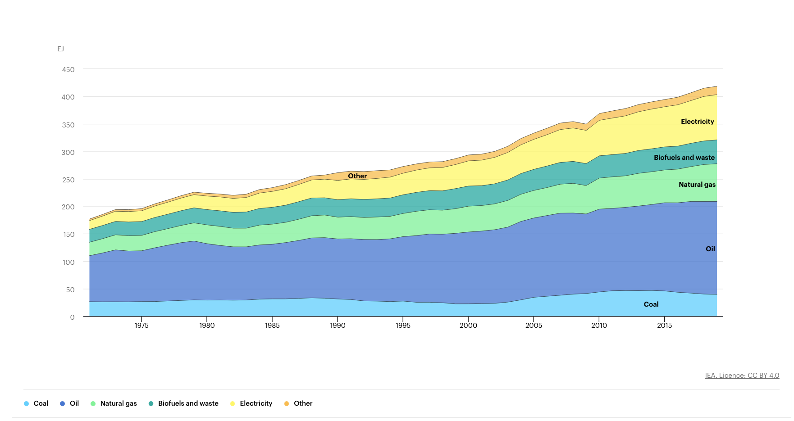
Notes: EJ = exajoules
Source: IEA, World total final consumption by source, 1971-2019, IEA, Paris
https://www.iea.org/data-and-statistics/charts/world-total-final-consumption-by-source-1971-2019
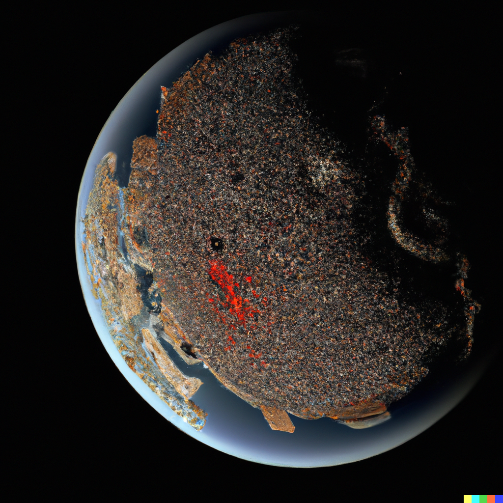
- Buildings consume about 40% of all produced energy
- Significant contributors to greenhouse gas emission
- Energy efficient buildings is vital to reduce emissions
Credit: Open AI DALL-E “Buildings invading the world”
Source: Global Status Report 2017, World Green Building Council https://worldgbc.org/wp-content/uploads/2022/03/UNEP-188_GABC_en-web.pdf
Global energy use
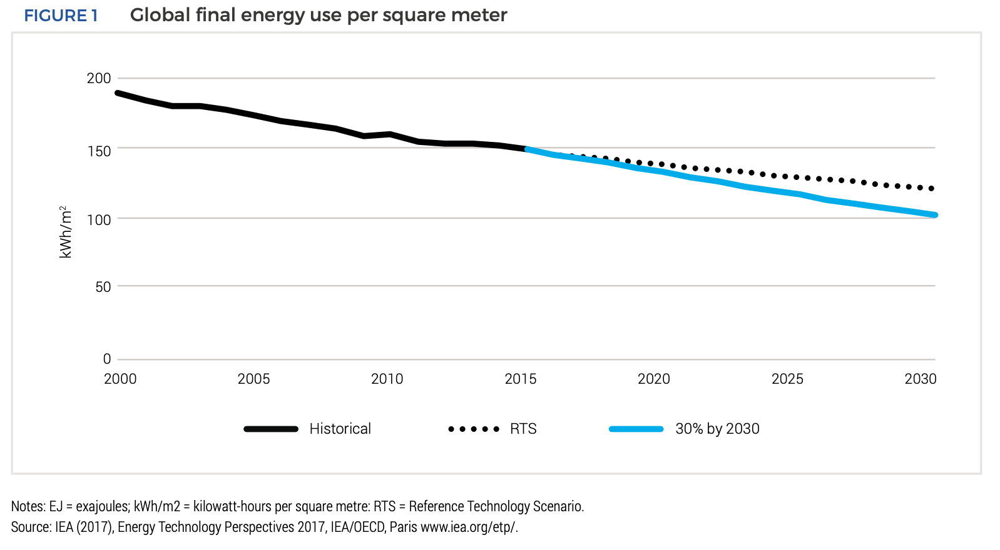
Paris agreement ambitions =
30% improvement by 2030
Norwegian building categories
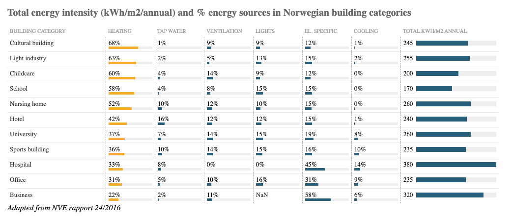
- Energy consumption in Norwegian households in 2021 = 39,8 TWh (of a total of 139,5 TWh)
- About 80% for heating purposes
Potential savings in buildings
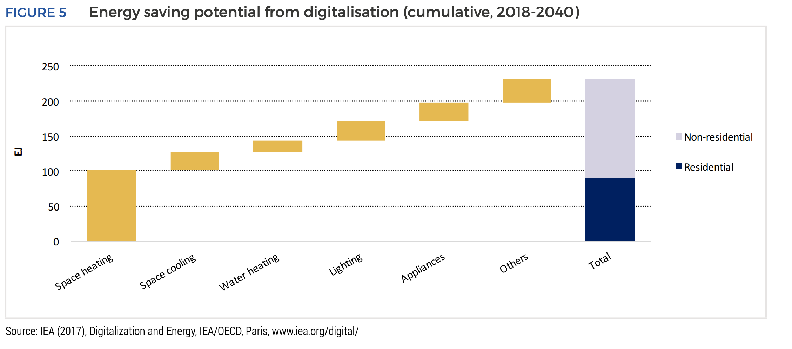
230 EJ
10% global saving from smart controls

Savings potential Norwegian buildings
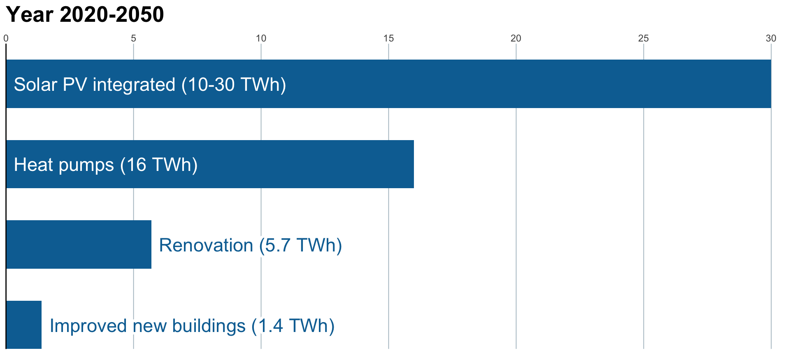
Total potential ≈ 35-50 TWh
1 TWh = 1 000 000 000 kWh
Norwegian household ≈ 16 000 kWh - 25 0000 kWh
Source: Sandberg et al. Mål om 10 TWh energisparing i Bygningsmassen”, Praktisk økonomi og finans nr. 1/2022. https://www.idunn.no/doi/10.18261/pof.38.1.2
Solar scenarios according to Institute for Energy Technology (IFE), The Norwegian Water Resources and Energy Directorate (NVE) and The Research Center for Sustainable Solar Cell Technology (SuSolTech)
What is retrofitting a building?
Changing a building system or structure after its initial construction and occupation
- Installing a new heat pump
- Ventilation with heat recovery
- New insulation
- Solar panels
- Meeting the Paris Agreement ambitions = more energy efficient households
Source: “Self-portrait during a recent retrofitting project”
Credit: Open AI DALL-E
Energy efficiency
Energy efficiency is the use of less energy to perform the same task or produce the same result
Setting the scene
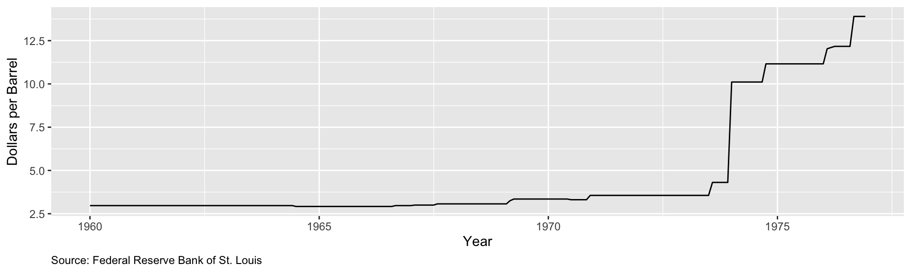
- From October 1973 to March 1974 the price of oil quadrupled
- Energy policy shifted focus to include energy demand
- Several energy efficiency campaigns introduced
$3 to $12
Setting the scene

Magazine PSA from Newsweek, September 15, 1975. Artwork by commercial artist and Mad magazine contributor Jack Davis.
“A request” from The President of the United States, Gerald Ford. Ford Library Museum
Setting the scene
- The U.S. Energy Information Administration (EIA) founded in 1977
- Promote sound policymaking
- Public understanding of energy
The 1979 EIA report 📜
- Raise efficiency by 1 percent, demand drop by 1 percent
- Raise efficiency by 2 percent, demand drop by 2 percent
- ; and so on
California Energy Commission. Technical Documentation of the Residential Sales Forecasting Model: Electricity and Natural Gas (staff report). Xerolith, October 1979.
Department of Energy. Model Documentation Report , Short Term Gasoline Demand Forecasting Model. Energy Information Administration, Office of Integrative Analysis. Xerolith, November 1979.
Department of Energy. Short-Term Energy Outlook. Analysis Report AR/IA/80. Xerolith draft, February 1980
Setting the scene
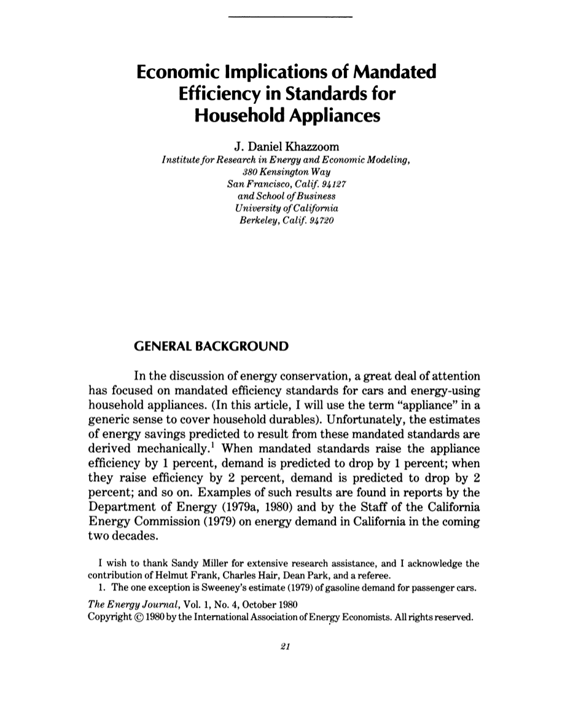
- Daniel Khazzom disagreed
- Questioned that energy efficiency leads to reduced energy demand
- Only a portion of these, if any, was being utilized to save energy
Setting the scene
…when a consumer buys a car that gets 30 mpg to replace one that gets 10 mpg, his price of gasoline per mile drops to a third of what it used to be. In all likelihood he will not be as sparing in driving his car as before. He may not take the bus any longer, or he may stop carpooling (Khazzom, 1980, p. 20)
- The improvements could ‘backfire’
- Brookes (1990) observed the same
- But Lovins (1988) argued “those effects would be insignificantly small…”
Setting the scene
The correspondance was quite hefty 📬
Khazoom (1989) about Lovins (1988):
“…precious little substance”
“…makes statements about facts, which are not supported by the evidence”
“…lack of command of the basics of economics”
Ín the midst of the debate the term “rebound effect” was born
Rebound effect definition
The rebound effect occurs where an energy efficiency increase leads to an increase in the consumption of energy services1
Different rebound effects
Example from a newly thermally retrofitted home
Direct rebound effects
Indirect rebound effects
- The cost per unit of
indoor warmth is lower - The householder keeps
higher indoor temperatures - Heats more rooms
- Opens the windows for
longer periods
Credit: OPEN AI DALL-E “Endless shopping opportunities”
Estimation methods
Case study: a newly thermofitted home
- Energy performance gap (
EPG) - Energy savings deficit (
ESD) - Elasticity rebound effect (
R) - Example based on the ‘Nuremberg case’, adapted from Galvin (2014)
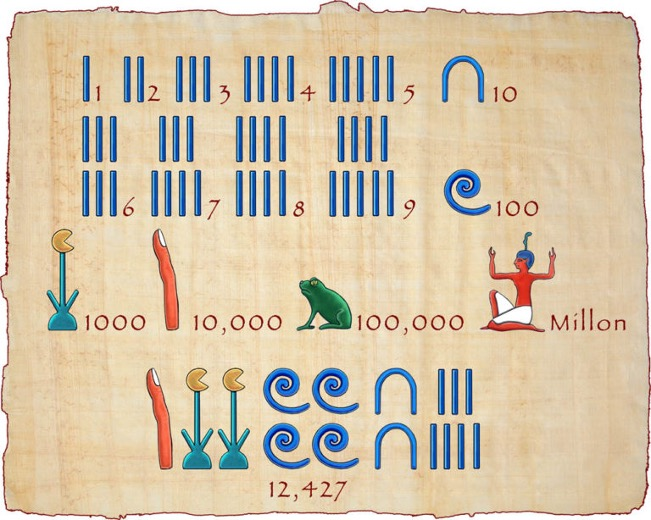
Rebound effect - case study
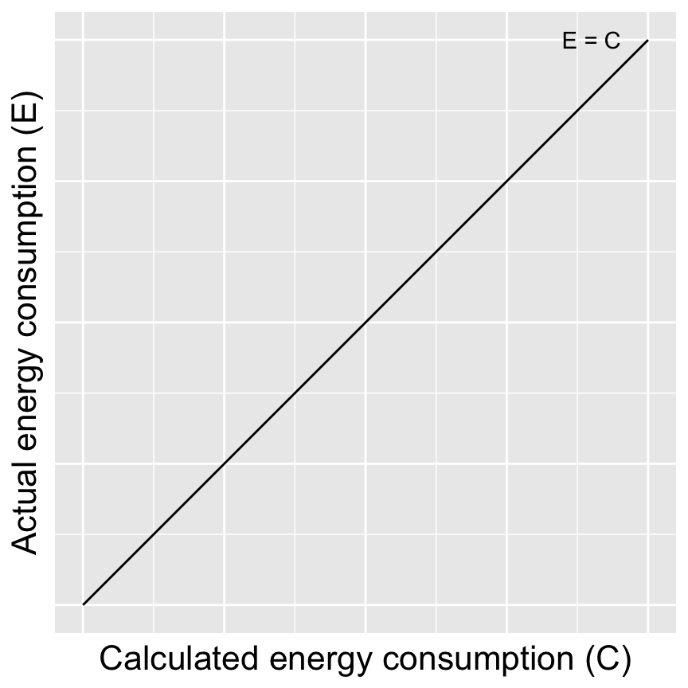
| After upgrade (kWh/m² annual) | |
|---|---|
| Calculated consumption (C2) | 97 |
| Actual consumption (E2) | 102 |
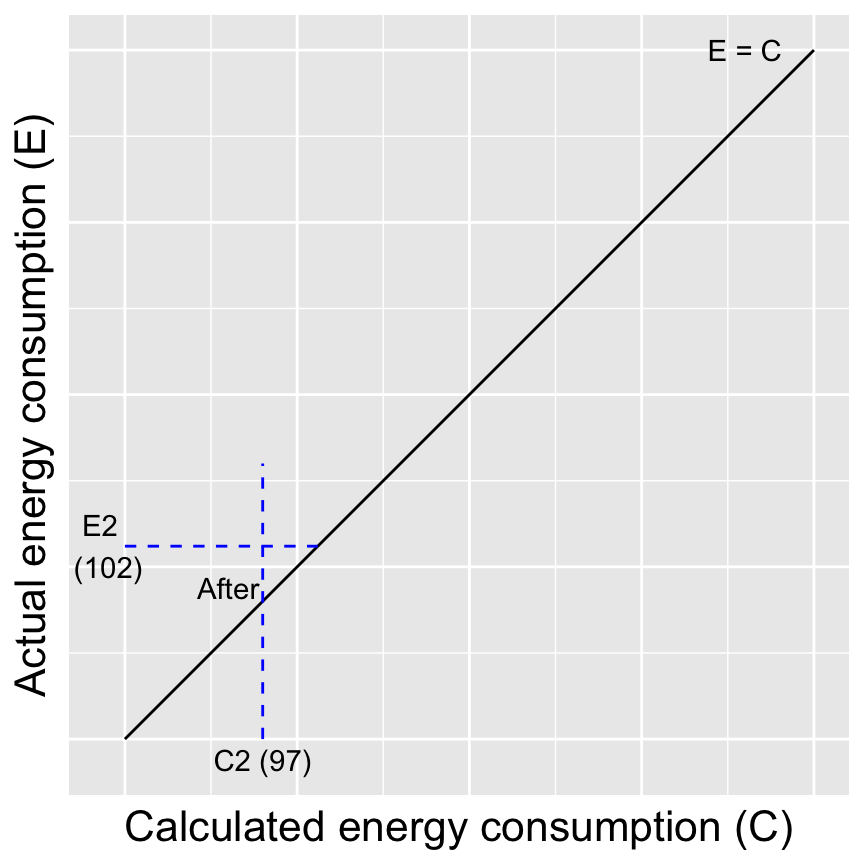

Energy performance gap (EPG)
\[ EPG = {\frac{E2 - C2}{C2}} = \frac{102-97}{97} = 0.052 \text{ or 5.2% } \]
- A ‘rebound’ effect of 5.2% does not seem to bad!?
- However, the actual consumption before retrofitting is not taken into account
Rebound effect - case study
| After upgrade (kWh/m² annual) | |
|---|---|
| Calculated consumption (C2) | 97 |
| Actual consumption (E2) | 102 |
| Before upgrade (kWh/m² annual) | |
| Actual consumption (E1) | 170 |
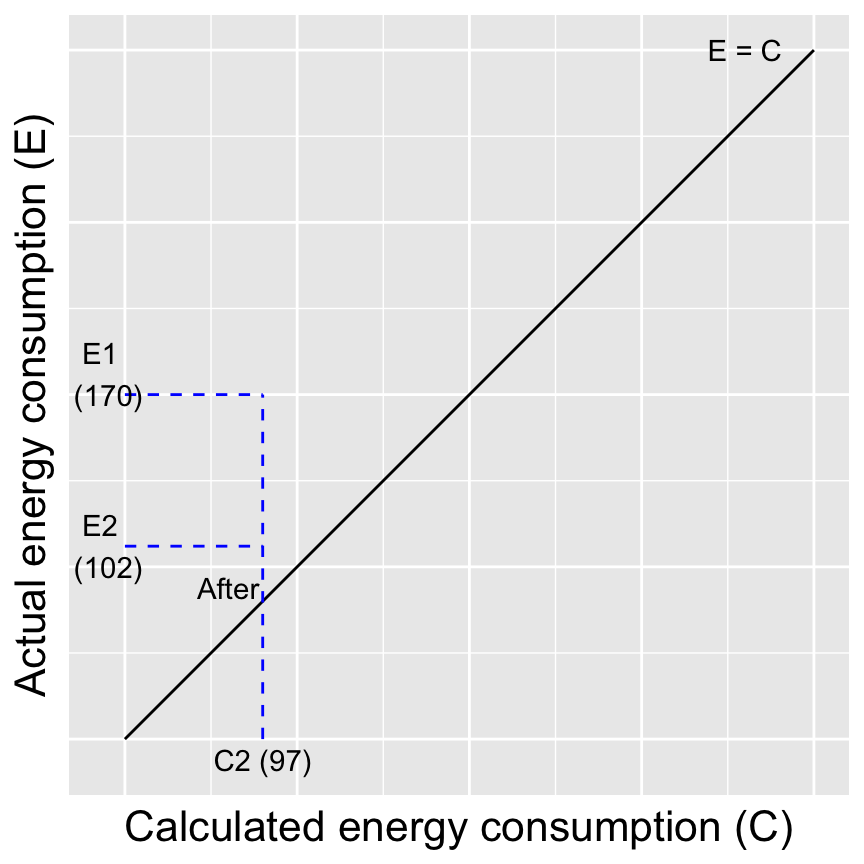
Energy savings deficit (ESD)
\[ ESD = {\frac{E2 - C2 } {E1- C2}} = \frac{102-97}{170-97} = 0.068 \text{ or 6.8% } \]
- Take into account the actual consumption before the retrofit
- A ‘rebound’ effect of 6.8% still does not seem to bad!?
Rebound effects - case study
| After upgrade (kWh/m² annual) | |
|---|---|
| Calculated consumption (C2) | 97 |
| Actual consumption (E2) | 102 |
| Before upgrade (kWh/m² annual) | |
| Actual consumption (E1) | 170 |
| Calculated consumption (C1) | 275 |
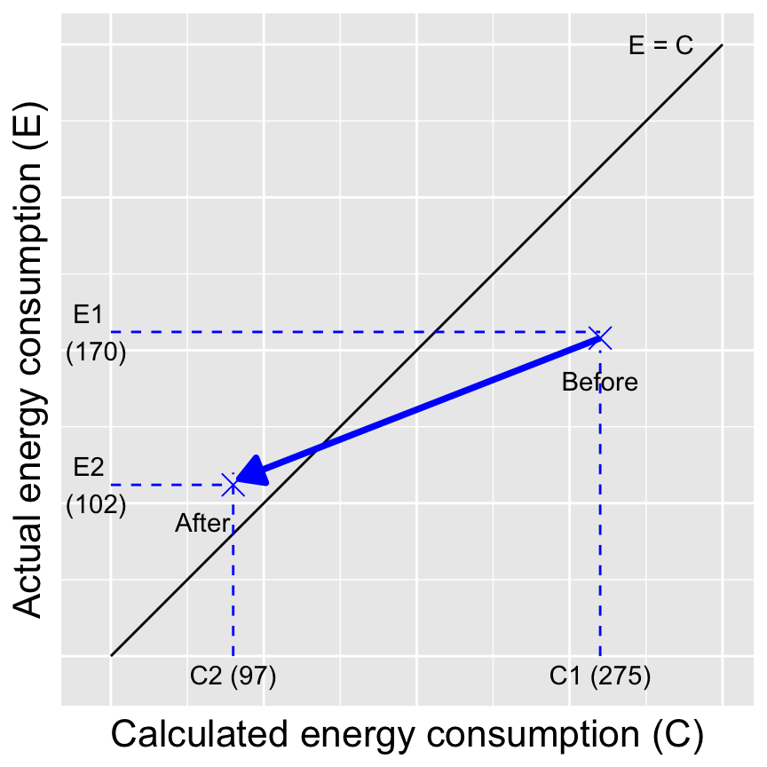
- Before the upgrade the household was very careful with heating
- Required 275kWh/m2a to be fully heated
- Only consumed 170kWh/m2a
Rebound effects - case study
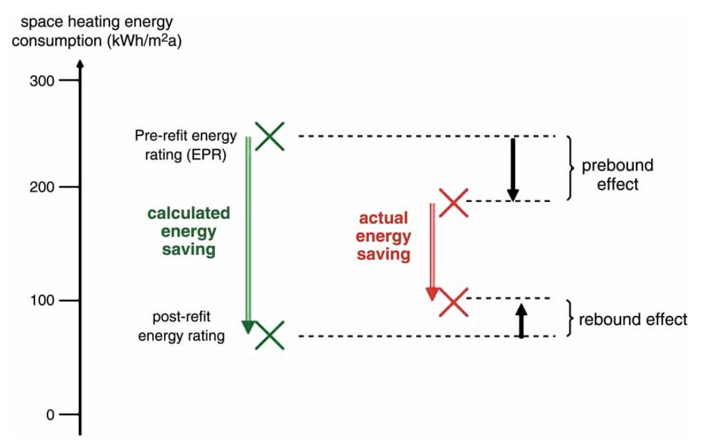
Adapted from Sunnika-Blank et al. (2012)
Elasticity rebound effect (R)
\[ R = 1- \frac{ln(\frac{E1}{E2})}{{ln(\frac{C1}{C2})}} = 1- \frac{ln(\frac{170}{102})}{{ln(\frac{275}{97})}} = 0.51 \text{ or 51% } \]
- 51% of the energy efficiency increase was used to increase the consumption of energy services
- 49% of the efficiency increase was used to reduce energy consumption
Why is this important?
- Case studies may use different definitions (
R,EPG,ESD)1 - The elasticity rebound effect is the only one that produces consistently coherent results
- Important in government reports2
Prebound effect in Germany
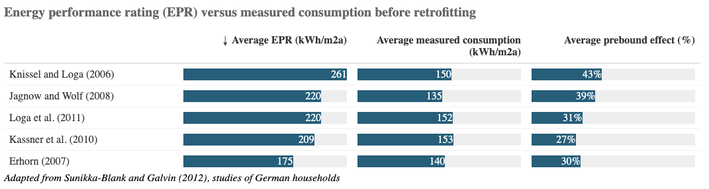
- Governmental estimates of energy savings in Germany use the EPR
- Hence, does not take into account the actual behavior
Direct rebound effects
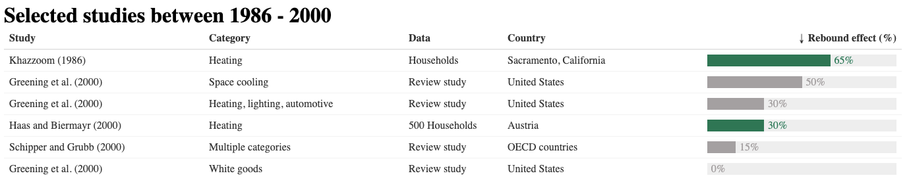
Haas and Biermayer (2000). Heating Austrian households.
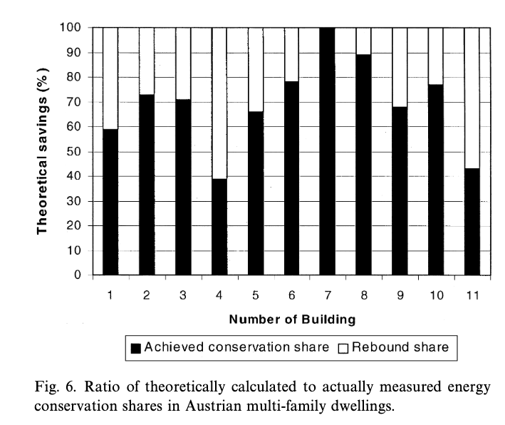
- A lot of variation within the same study
- What about Norway?
Rebound effects in Norwegian buildings
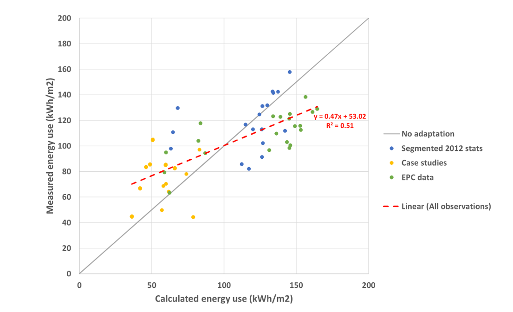
In a year 2050 projection the rebound effect ≈ 20-28%
Policy counteracting
- Information
- Smart steering
- Smart house design
- Two-step tariffs (July 1 2022)
Source: N.H. Sandberg et al. / Energy and Buildings 146 (2017) 220–232
Economy-wide rebound effect
- Recent review study by Brockway et al. (2021)
- Compared 21 studies with ‘computable general equilibrium’ (CGE) models
- Average rebound effect of 58%
- 12 studies with differing methods
- Average rebound effect of 71%
- 6 studies reported > 100% rebound effect
Brockway, Paul E., Steve Sorrell, Gregor Semieniuk, Matthew Kuperus Heun, and Victor Court. 2021. “Energy Efficiency and Economy-Wide Rebound Effects: A Review of the Evidence and Its Implications.” Renewable and Sustainable Energy Reviews 141 (May): 110781. https://doi.org/10.1016/j.rser.2021.110781
Economy-wide rebound effect
- The study examined if these effects are factored into global energy models
- Investigated BP, Shell, International Energy Agency, IPCC
- The models were unable to capture all the rebound effects
- Overestimating the global potential for energy savings
Brockway, Paul E., Steve Sorrell, Gregor Semieniuk, Matthew Kuperus Heun, and Victor Court. 2021. “Energy Efficiency and Economy-Wide Rebound Effects: A Review of the Evidence and Its Implications.” Renewable and Sustainable Energy Reviews 141 (May): 110781. https://doi.org/10.1016/j.rser.2021.110781
More than a price effect? 💰
Economist define rebound effects as a price effect1
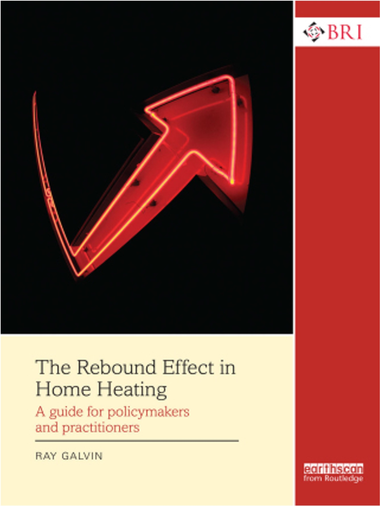
- After a retrofitting the household functions differently, it just is warmer ➡️ physical effect
- Advanced thermostats and timers, many households find these difficult to use ➡️ user interface effect
- Underfloor heating, not easy to adapt to daily rhythms of life ➡️ sosio-technical mismatch effect
- Gaps in insulation, poorly matched boilers ➡️ technology failure effect
Conclusions 📜
- Rebound effects reduces the potential energy savings
- Future energy use projections should take this into account
- Some of the lost savings ➡️ healthy houses
- Not only a price effect ➡️ sosio-technical system
- A holistic view might make it easier to collaborate across disciplines
Credit: OPEN AI DALL-E “Digital art of almost 50 year old male saying thank you to the audience”